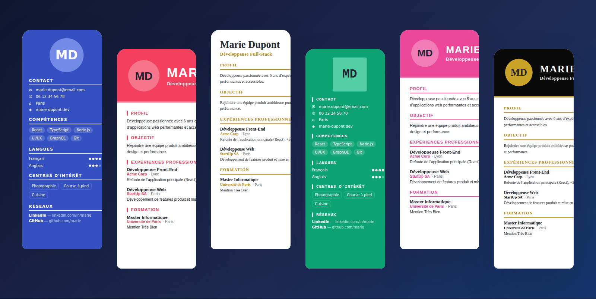

Répondez à un questionnaire guidé, choisissez parmi 50 designs, et votre CV se génère automatiquement. Modifiable en direct, exportable en PDF ou JPG, et sauvegardé dans votre banque de CV personnelle.
Identité, expériences, diplômes, compétences, langues, centres d'intérêt… Vous répondez, et chaque information est placée au bon endroit.
Décrivez le style voulu — moderne, tech, luxe, créatif, minimaliste, corporate — et les modèles les plus adaptés vous sont proposés en priorité.
Modifiez le texte directement sur le CV, exportez en PDF ou JPG haute qualité, et retrouvez tous vos CV dans votre banque personnelle.

Un questionnaire simple, étape par étape.
Le design qui vous ressemble, parmi 50.
Modifiez le texte directement sur l'aperçu.
En PDF ou JPG, et c'est prêt à envoyer.
Gratuit, sans inscription — vos données restent dans votre navigateur.
Ouvrir le générateur de CV →